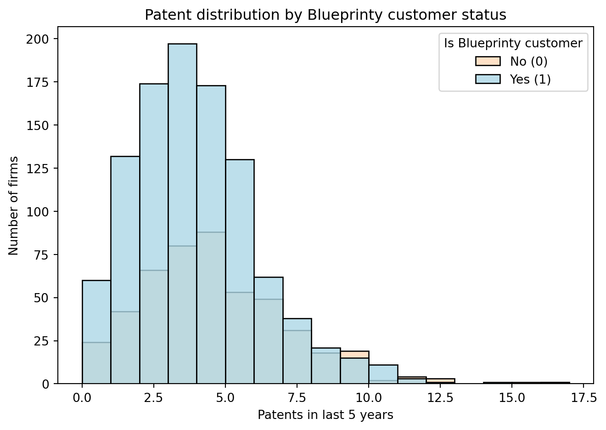
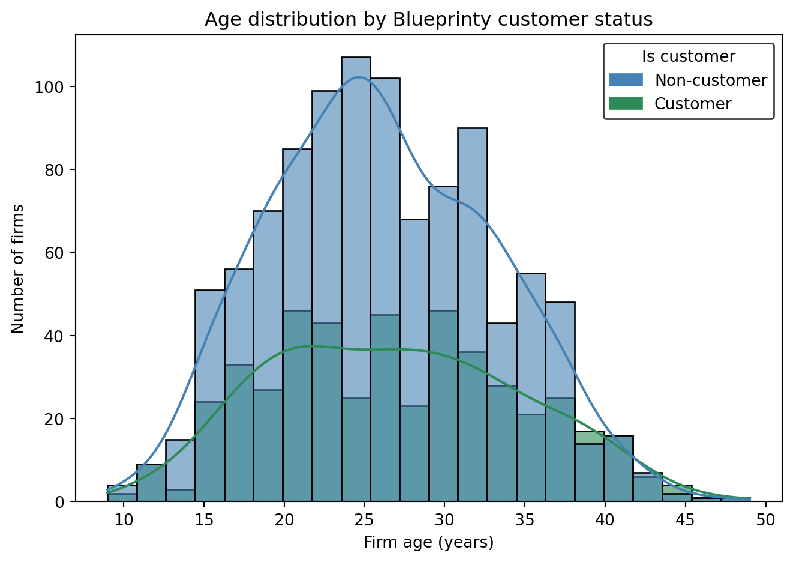

| patents | region | age | iscustomer | |
|---|---|---|---|---|
| 0 | 0 | Midwest | 32.5 | 0 |
| 1 | 3 | Southwest | 37.5 | 0 |
| 2 | 4 | Northwest | 27.0 | 1 |
| 3 | 3 | Northeast | 24.5 | 0 |
| 4 | 3 | Southwest | 37.0 | 0 |
Poisson Regression Examples
Assignment 2
Blueprinty Case Study
Introduction
Blueprinty is a small firm that makes software for developing blueprints specifically for submitting patent applications to the US patent office. Their marketing team would like to make the claim that patent applicants using Blueprinty’s software are more successful in getting their patent applications approved. Ideal data to study such an effect might include the success rate of patent applications before using Blueprinty’s software and after using it. Unfortunately, such data is not available.
However, Blueprinty has collected data on 1,500 mature (non-startup) engineering firms. The data include each firm’s number of patents awarded over the last 5 years, regional location, age since incorporation, and whether or not the firm uses Blueprinty’s software. The marketing team would like to use this data to make the claim that firms using Blueprinty’s software are more successful in getting their patent applications approved.
Data
To start we will review the first 5 data points collected in a table format:
Below is the distribution of patents among Blueprinty customers vs non-customers. The histogram shows that Blueprinty customers (teal bars) tend to have more patents on average than non-customers (light blue bars).

On average, Blueprinty customers have approximately 4.13 patents over 5 years, compared to about 3.47 for non-customers. While this naive comparison suggests customers produce more patents, we must consider that Blueprinty’s customers may differ systematically in other ways (e.g. perhaps they are older firms or clustered in certain regions).
Let’s examine the age and regional composition of customers vs non-customers.

Blueprinty customers have a slightly higher mean age since incorporation (about 26.9 years) than non-customers (26.1 years), but the age distributions largely overlap (both groups are typically 20–30 years old, with only minor differences). This suggests that firm age might not differ dramatically by customer status, though we will account for age in the analysis.
Regionally, there are stark differences in who adopts Blueprinty’s software.
Counts of firms by region and Blueprinty customer status. In the Northeast region, the green bar (Blueprinty customers) is nearly as high as the blue bar (non-customers), indicating a large share of Blueprinty’s users are in the Northeast. In contrast, in all other regions (Midwest, South, Southwest, Northwest) the majority of firms are non-customers. This reveals that Blueprinty’s customer base is heavily concentrated in the Northeast, which suggests potential selection bias by region.
Indeed, about 68% of Blueprinty’s customers are located in the Northeast, whereas only ~27% of non-customer firms are in the Northeast. Other regions (Midwest, South, Southwest, Northwest) are under-represented among customers relative to non-customers. This imbalance means any raw difference in patent counts could partly reflect regional effects. In summary, Blueprinty customers tend to have slightly older firms (though age differences are minor) and are much more likely to be in the Northeast region. We will need to control for these factors when analyzing the effect of Blueprinty’s software on patent output.
Estimation of Simple Poisson Model
Since our outcome variable of interest can only be small integer values per a set unit of time, we can use a Poisson density to model the number of patents awarded to each engineering firm over the last 5 years. We start by estimating a simple Poisson model via Maximum Likelihood.
Below, \(Y_i\) is the patent count for firm \(i\) and \(\lambda\) is the average number of patents per firm in five years.
| Symbol | Meaning |
|---|---|
| \(Y_i\) | Observed patent count for firm \(i\) (integer \(\ge 0\)) |
| \(n\) | Total number of firms (length of \(\mathbf y\)) |
| \(\lambda\) | Poisson rate parameter — the mean (and variance) of the distribution |
| \(\mathbf y\) | Column vector of all counts: \(\mathbf y = (\,y_{1},\,y_{2},\,\dots,\,y_{n})^{\!\top}\) |
| \(\mathcal L(\lambda;\mathbf y)\) | Likelihood of the entire dataset, given \(\lambda\) |
| \(\ell(\lambda)\) | Log-likelihood, \(\ell(\lambda)=\log \mathcal L(\lambda;\mathbf y)\) |
\[ P\!\bigl(Y_i=y_i \mid \lambda\bigr)= \frac{e^{-\lambda}\lambda^{y_i}}{y_i!}, \qquad y_i=0,1,2,\dots \]
\[ \boxed{ \mathcal L(\lambda;\mathbf y)= e^{-n\lambda}\, \lambda^{\sum_{i=1}^{n} y_i}\! \Big/ \prod_{i=1}^{n} y_i! } \qquad \boxed{ \ell(\lambda)= \sum_{i=1}^{n}\! \bigl( y_i\log\lambda-\lambda-\log y_i! \bigr) } \]
Putting all counts into one vector lets us write the likelihood compactly and pass the entire dataset to a single log-likelihood function. In the code below that function is called loglik_poisson. It follows the “parameter-vector” convention most optimisers expect: the one unknown, lambda, is stored as theta[0]. This style makes the function future-proof—if we later add more parameters we can just extend the theta vector without rewriting the optimiser call.
import numpy as np, math
def loglik_poisson(theta, y):
"""
Poisson log-likelihood
Parameters
----------
theta : 1-element array-like
theta[0] = λ (must be > 0)
y : 1-D numpy array of non-negative integers
Returns
-------
float
Scalar log-likelihood ℓ(λ)
"""
lam = float(theta[0]) # ← parallels 'mu <- theta[1]'
if lam <= 0:
return -np.inf # guard just like s2>0 in Normal case
n = y.size
# ll = Σ(y_i log λ) − n λ − Σ log(y_i!)
ll = np.sum(y * np.log(lam)) - n * lam - np.sum([math.lgamma(k + 1) for k in y])
return llThe curve below shows how the log-likelihood changes as we slide λ across plausible values. It rises steeply, flattens, and then falls—peaking (unsurprisingly) right where λ equals the sample mean (~3.7 patents). That single highest point is the Maximum-Likelihood Estimate: the value of λ that makes the observed patent counts most probable under a Poisson model.
\[ P\!\bigl(Y_i = y_i \mid \lambda\bigr)= \frac{e^{-\lambda}\lambda^{y_i}}{y_i!}, \qquad y_i = 0,1,2,\dots \]
Differentiating the log-likelihood
\[ \ell(\lambda)=\sum_{i=1}^{n} \bigl( y_i\log\lambda-\lambda-\log y_i! \bigr) \]
with respect to () and setting the derivative to zero gives
\[ \frac{\partial \ell}{\partial \lambda} \;=\; \frac{\sum_{i=1}^{n}y_i}{\lambda}-n \;=\;0 \;\Longrightarrow\; \boxed{\hat\lambda=\bar y} \]
so the maximum-likelihood estimate is nothing more than the sample mean of the counts. The first code cell reflects that algebra exactly: y.mean() is computed and printed as the Analytic MLE, which for our data equals 3.6847 patents per firm.
Analytic MLE λ̂ = 3.6847Optimiser MLE λ̂ = 3.6847The second cell tackles the same task numerically. scipy.optimize.minimize_scalar is instructed to minimise the negative log-likelihood (equivalently maximise ()), searching over the interval ([10^{-4},10]). Because the optimiser treats () as a scalar, we wrap it in a one-element list when passing it to loglik_poisson. After a quick line search it returns an Optimiser MLE of 3.6847, matching the analytic result to four decimal places—strong confirmation that the calculus and the numerical optimisation tell the same story.
Estimation of Poisson Regression Model
Next, we extend our simple Poisson model to a Poisson Regression Model such that \(Y_i = \text{Poisson}(\lambda_i)\) where \(\lambda_i = \exp(X_i'\beta)\). The interpretation is that the success rate of patent awards is not constant across all firms (\(\lambda\)) but rather is a function of firm characteristics \(X_i\). Specifically, we will use the covariates age, age squared, region, and whether the firm is a customer of Blueprinty.
todo: Update your likelihood or log-likelihood function with an additional argument to take in a covariate matrix X. Also change the parameter of the model from lambda to the beta vector. In this model, lambda must be a positive number, so we choose the inverse link function g_inv() to be exp() so that \(\lambda_i = e^{X_i'\beta}\). For example:
poisson_regression_likelihood <- function(beta, Y, X){
...
}A covariate (sometimes called a feature or explanatory variable) is simply an observed attribute we believe helps explain the outcome. Here our covariates are age, age ² (to capture curvature), a set of region dummies, and a binary flag for Blueprinty customer status. By stacking these in a matrix \(X\) and multiplying by a coefficient vector \(\boldsymbol\beta\), we let each firm have its own mean rate \(\lambda_i=\exp(X_i^{!\top}\boldsymbol\beta)\)—the exponential ensures every \(\lambda_i\) stays positive.
| Symbol | Meaning |
|---|---|
| \(Y_i\) | Observed patent count for firm \(i\) (integer \(\ge 0\)) |
| \(X_i\) | Row vector of covariates for firm \(i\) (intercept, age, age\(^{2}\), region dummies, Blueprinty flag) |
| \(\boldsymbol\beta\) | Column vector of coefficients (one per covariate) |
| \(\lambda_i\) | Mean patents for firm \(i\): \(\lambda_i = \exp\!\bigl(X_i^{\!\top}\boldsymbol\beta\bigr)\) |
| \(n\) | Total number of firms (rows of \(X\)) |
| \(\mathbf y\) | Column vector of all counts: \(\mathbf y = (\,y_{1},\,y_{2},\,\dots,\,y_{n})^{\!\top}\) |
| \(X\) | Design matrix that stacks all \(X_i\) rows |
| \(\mathcal L(\boldsymbol\beta;\mathbf y,X)\) | Likelihood of the entire dataset, given \(\boldsymbol\beta\) |
| \(\ell(\boldsymbol\beta)\) | Log-likelihood, \(\ell(\boldsymbol\beta)=\log \mathcal L(\boldsymbol\beta;\mathbf y,X)\) |
Expanding from a constant‐rate model to Poisson regression swaps the single parameter \(\lambda\) for a whole vector of coefficients \(\boldsymbol\beta\).
Each firm now gets its own mean rate through the inverse-link function
\(\lambda_i=\exp(X_i^{\!\top}\boldsymbol\beta)\), guaranteeing positivity while letting the linear predictor \(X_i^{\!\top}\boldsymbol\beta\) wander over the real line.
The covariate matrix \(X\) holds an intercept, age, age², a set of region dummies, and a Blueprinty-customer flag, so any of those characteristics can nudge the expected patent count up or down.
\[ Y_i \,\bigl|\, X_i \;\sim\; \operatorname{Poisson}\!\bigl(\lambda_i\bigr), \qquad \lambda_i \;=\; \exp\!\bigl(X_i^{\!\top}\boldsymbol\beta\bigr), \qquad i = 1,\dots,n. \]
\[ \mathcal L(\boldsymbol\beta;\mathbf y,X) \;=\; \prod_{i=1}^{n} \frac{e^{-\lambda_i}\,\lambda_i^{\,Y_i}}{Y_i!}, \qquad \ell(\boldsymbol\beta) \;=\; \sum_{i=1}^{n} \Bigl( Y_i\,X_i^{\!\top}\boldsymbol\beta \;-\; \exp\!\bigl(X_i^{\!\top}\boldsymbol\beta\bigr) \;-\; \log Y_i! \Bigr). \]
The code block that follows translates this math into Python.
loglik_poisson_reg(beta, y, X) now takes both the response vector and the covariate matrix, computes the linear predictor \(X\boldsymbol\beta\), exponentiates to obtain \(\boldsymbol\lambda\), and returns the scalar log-likelihood. Passing that function to an optimiser (e.g. scipy.optimize.minimize) yields the maximum-likelihood estimates for the full coefficient vector \(\boldsymbol\beta\).
import numpy as np, math
def loglik_poisson_reg(beta, y, X):
"""
Poisson regression log-likelihood.
beta : 1-D array, length p (coefficients)
y : 1-D array, length n (counts)
X : 2-D array, shape (n, p) (covariate matrix)
Returns
-------
float : scalar log-likelihood ℓ(β)
"""
eta = X @ beta # linear predictor η = Xβ (shape n)
lam = np.exp(eta) # inverse link λ = exp(η)
if np.any(lam <= 0):
return -np.inf # numerical safety
ll = np.sum(y * eta - lam - [math.lgamma(k + 1) for k in y])
return llWith this function we can now hand the entire β vector to an optimiser (e.g. scipy.optimize.minimize) to obtain maximum-likelihood estimates, just as we did for the single-parameter case—only now the model flexes with age, geography, and Blueprinty adoption.
todo: Use your function along with R’s optim() or Python’s sp.optimize() to find the MLE vector and the Hessian of the Poisson model with covariates. Specifically, the first column of X should be all 1’s to enable a constant term in the model, and the subsequent columns should be age, age squared, binary variables for all but one of the regions, and the binary customer variable. Use the Hessian to find standard errors of the beta parameter estimates and present a table of coefficients and standard errors.
todo: Check your results using R’s glm() function or Python sm.GLM() function.
todo: Interpret the results.
todo: What do you conclude about the effect of Blueprinty’s software on patent success? Because the beta coefficients are not directly interpretable, it may help to create two fake datasets: X_0 and X_1 where X_0 is the X data but with iscustomer=0 for every observation and X_1 is the X data but with iscustomer=1 for every observation. Then, use X_0 and your fitted model to get the vector of predicted number of patents (y_pred_0) for every firm in the dataset, and use X_1 to get Y_pred_1 for every firm. Then subtract y_pred_1 minus y_pred_0 and take the average of that vector of differences.
AirBnB Case Study
Introduction
AirBnB is a popular platform for booking short-term rentals. In March 2017, students Annika Awad, Evan Lebo, and Anna Linden scraped of 40,000 Airbnb listings from New York City. The data include the following variables:
todo: Assume the number of reviews is a good proxy for the number of bookings. Perform some exploratory data analysis to get a feel for the data, handle or drop observations with missing values on relevant variables, build one or more models (e.g., a poisson regression model for the number of bookings as proxied by the number of reviews), and interpret model coefficients to describe variation in the number of reviews as a function of the variables provided.